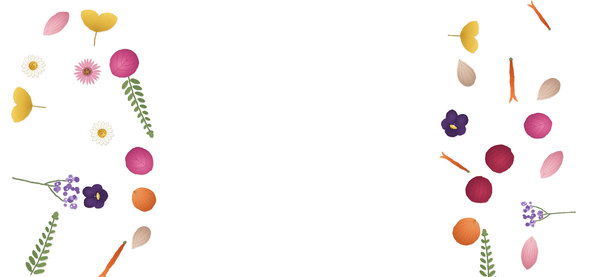
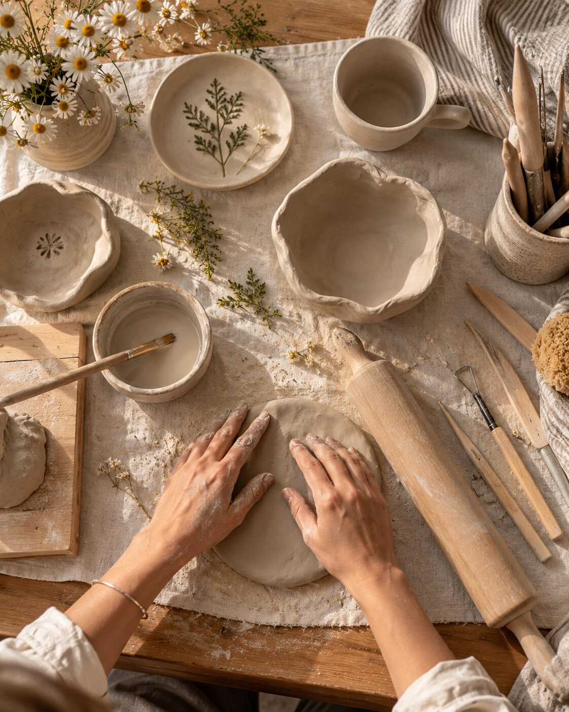
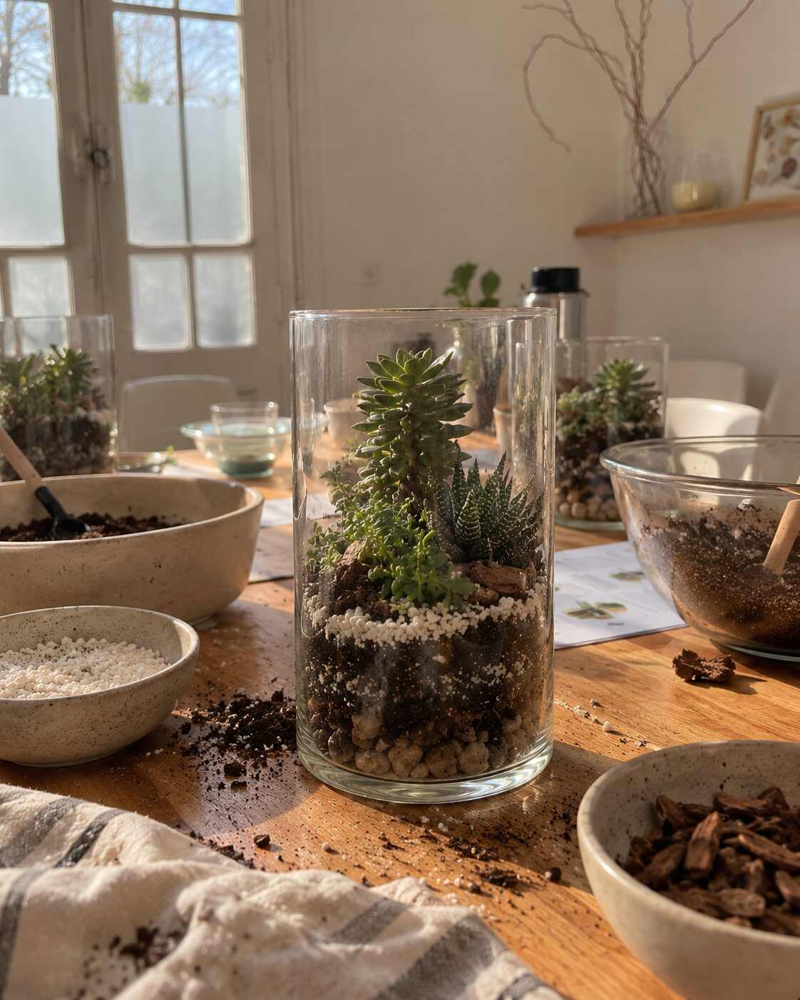
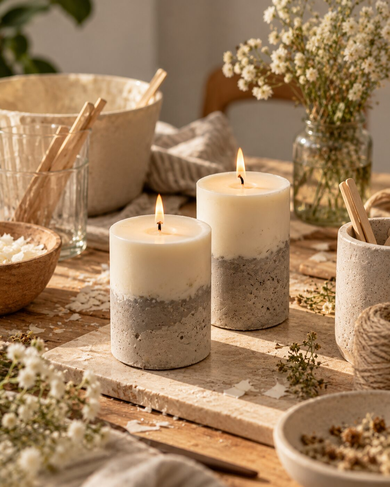
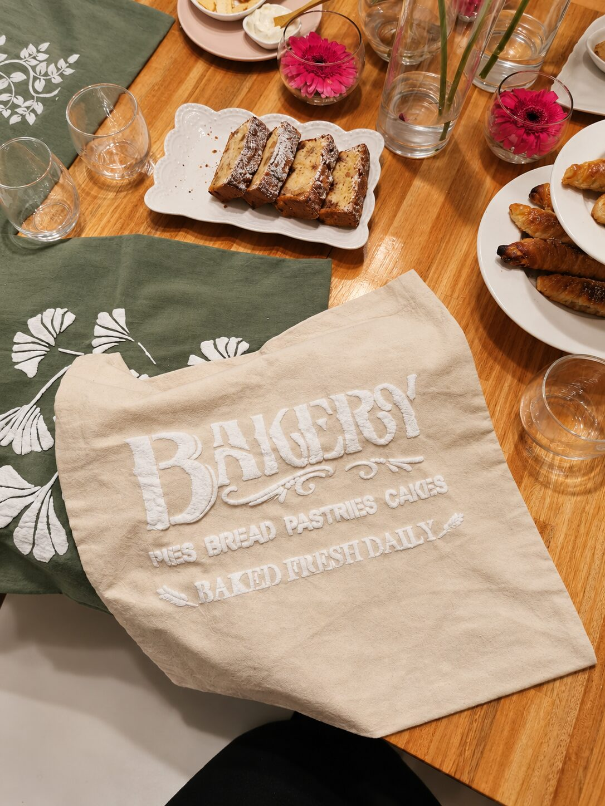
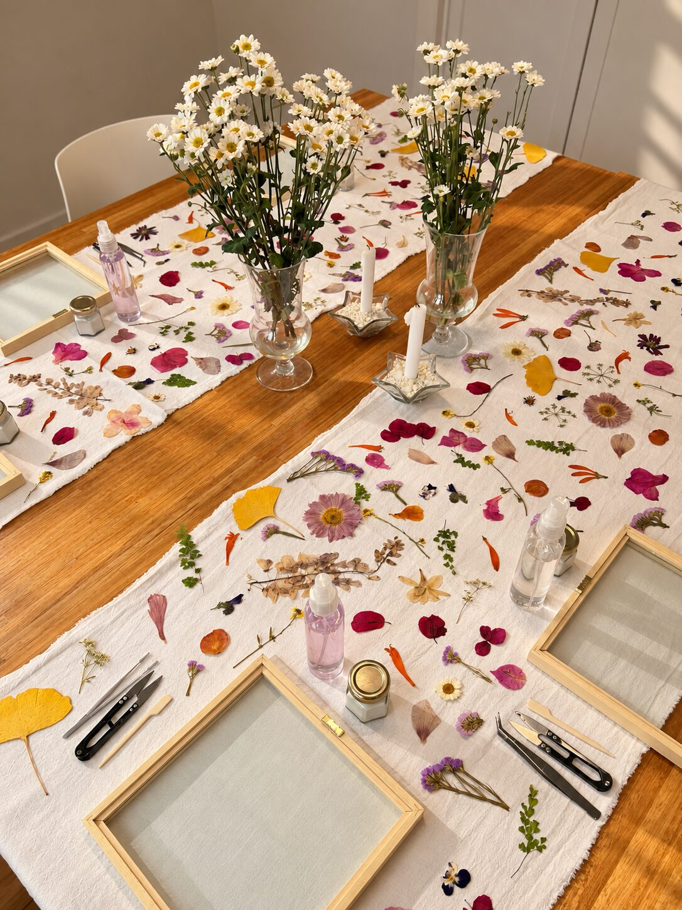
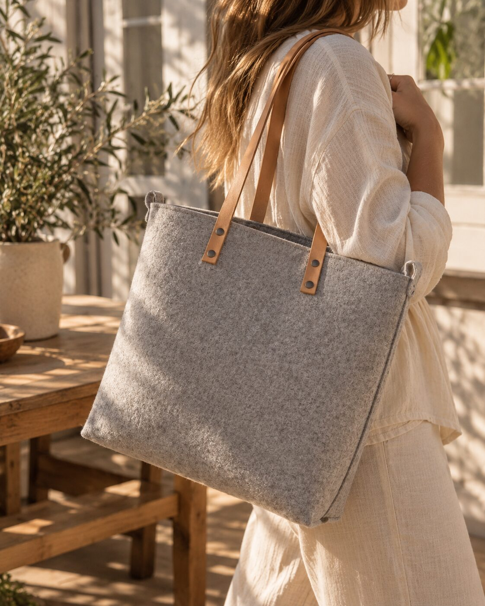
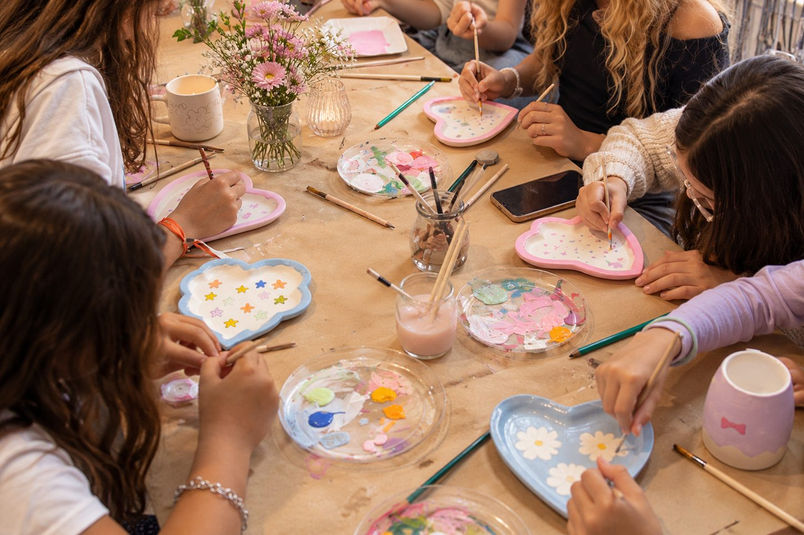

Festejos distintos a un salón de siempre
Todos los cumpleaños en Casa Lamarca vienen con taller incluido: elegís la temática y armamos la fiesta alrededor de eso. Cada festejo se arma a medida de quién lo cumple.



Elegís la temática, el taller es parte del cumple
No es un salón con animación aparte: el taller ES la actividad central de la fiesta, alrededor de la torta y los invitados.
-

01Cerámica
Modelado desde cero o pintura sobre piezas: elegís la modalidad y te llevás algo hecho por vos.
Ver taller -

02Terrarios
Armamos y diseñamos un terrario de suculentas, y aprendemos a cuidarlo.
Ver taller -

03Velas rústicas
Combinamos cemento y cera de soja para crear una vela rústica, en dos etapas.
Ver taller -
 04
04
Arte y vino
Pintás la pieza que elijas mientras compartimos vino y picada. Sin experiencia previa.
Ver taller -

05Estampado 3D
Estampamos almohadones o un camino de mesa con texturas en relieve, eligiendo el stencil.
Ver taller -
 06
06
Tote bags Painting
Pintás y personalizás tu propia tote bag, con los colores y diseños que elijas.
Ver taller -

07Cuadros con Flores Prensadas
Armamos un cuadro con flores naturales prensadas. Podés sumar una foto o frase.
Ver taller -

08Carteras Sin Costura
Armamos una cartera de fieltro con manijas de cuero, sin coser, y elegís el tono.
Ver taller -

09Arte en Piezas de Cerámica
Cada invitado elige una pieza de cerámica y la pinta a su manera y se la lleva de recuerdo.
Ver taller -
 10
10
Charms Party
Armás tu collar o pulsera combinando 6 charms a tu gusto. Infinitas combinaciones.
Ver taller -
11
Arte y Jardinería
Pintamos una maceta y plantamos una aromática. Pensado para cumpleaños infantiles.
Ver taller
Reservá tu fecha
Contanos de quién es el cumple
Completá esto y seguimos la charla por WhatsApp con opciones de temática y disponibilidad.